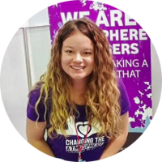
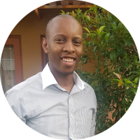

The Johannesburg Dream Centre
Established in 2014, The Johannesburg Dream Centre has been a cornerstone of our local community,
providing essentail programs and services that make a real difference in people's lives.
Our History
What started as a small program of helping people to uplift poverty has grown into a comprehensive community hub serving over 500 families annually.
Through the dedication of our staff, volunteers, and community partners, we have expanded our offerings to meet the diverse need of our community.
Mission Statement
Alleviating poverty by means of a multi-level approch aimed at working to meet immediate needs,
empowering people living in poverty and inspiring them to work towards a better quality of life.
Vision Statement
To change the atmosphere of Johannesburg to one in which poverty is drastically reduced and there is hope for a brighter future.
Our Team

Alicia Swanepoel
Managing Director and Co-Founder
Alicia has over 15 years of experience in community development and leads our strategic initiatives.
Oscar Bashing
Director
Oscar oversees all educational and recreational programs, ensuring quality and impact.

Zakhele Nyandeni
Youth Development Director
Zakhele specializes in youth empowerment and mentorship programs.
Our Achievements
- Served over 2,500 community members since inception